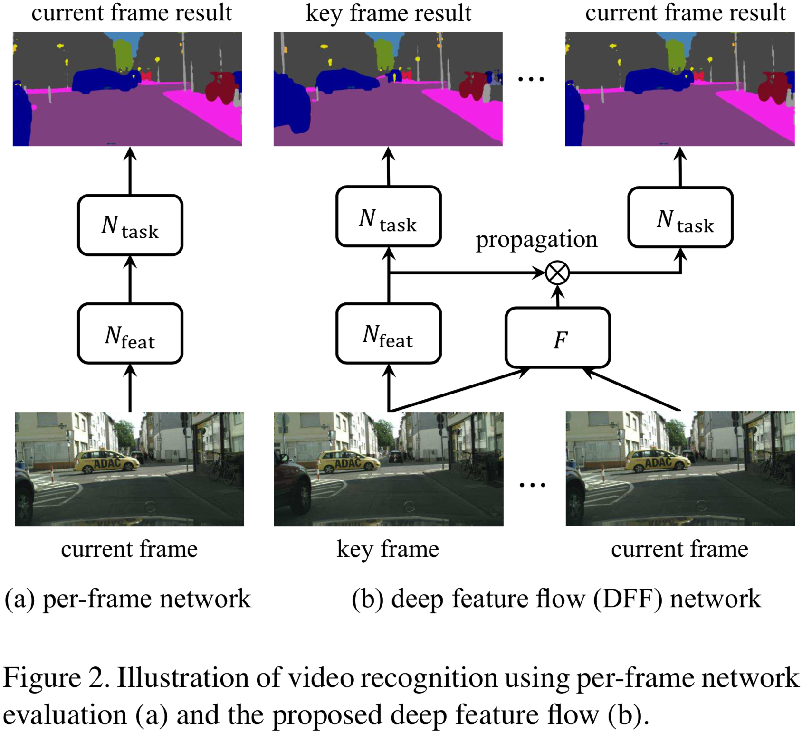

painterdrown Blog - painterdrown CV
⏰ 2018-06-01 00:00:00
👨🏻💻 painterdrown
Oh yeah, 终于开始看视频目标检测啦！BTW，🎈 Happy Children’s Day 🎈
目前的图像目标检测已经发展地比较成熟了，不过如果单帧地应用在视频上则显得太慢了。作者提出了 deep feature flow（深度特征流，一个又快又准的视频目标检测框架。它只在 sparse key frames 上跑卷积，通过 deep feature maps 在同一个流场（我理解为一段连续的且比较相似的帧）的其它帧之间进行传播。训练是端到端的，速度和精度（精度有吗？感觉还不如 Faster R-CNN）上都有明显的提升。
从图像识别到视频识别，要处理好视频帧之间的连续性以及冗余的信息。现在大多数的 CNN 架构里面，卷积计算占计算资源消耗的主体。计算出来的 convolutional feature maps 保留了图像的低级内容到中高级语义内容的对应关系。这样一来，就可以轻易地在相邻帧之间传播特征信息（by spatial warping 空间变形），这与光流类似。
一般来说，flow estimation & feature propagation 比简单地去计算多帧的 convolutional features 要快得多。而且如果能用网络做 flow estimation 的话，整个视频目标检测架构就是端到端的。
Image Recognition。已经有很多成熟的网络了，可以看我前面图像目标识别的学习笔记，这里不赘述。
Network Acceleration。比如 Fast R-CNN 里面的矩阵分解；比如 Quantized Neural Networks 的参数量子化（暂未了解）。
Optical Flow（光流）。这个我之前在研究生学习班里几次听到这个概念。它是视频分析的基本任务，目前主要关注的是 small displacements，最近逐渐转向 large displacements，以及加入 combinatorial matching（组合匹配）这个概念。现在的深度学习已经逐渐漫延到光流这一块，FlowNet 用深层 CNN 来估算视频中的 motion 并且有不错的效果。总而言之，光流在计算机视觉方面有奇效，比如 pose estimation（姿态估计），应该探索如何应用于视频目标检测中。
Exploiting Temporal Information in Video Recognition。这里要解决的问题是，如何挖掘视频中的时间信息？在 T-CNN 里面，其融合了时间和上下文信息；FSO 提出了大范围的时空正则化；STFCN 用一个时空的 FCN 来做视频语义分割。虽然这些方法提升了精度，但是还是需要大量的计算，影响了速度。
Slow Feature Analysis。在视频里面，高级的语义概念往往比低级的图像外观演化得更慢，因此这些深度的特征在视频帧之间的变化十分平滑。
Clockwork Convnets。它做的事情跟 Deep Feature Flow 很类似：都是使网络中的某些层在视频中的某些帧上失效以及特征复用。但是由于没有考虑到不同帧之间的对应信息，Clockwork Convnets 在加速的时候会损失较多的精度。

总网络（feed-forward convolutional neutral）可以分解为连续的两部分：Nfeat（特征网络） 和 Ntask（任务网络）。前者（全卷积）会输出许多 feature maps，后者会在这些 feature maps 上面做检测任务。
通过流估计算法得到 flow field（我理解为关键帧及其相邻帧之间的流信息）。通过双线性插值来做 feature warping。为了减少流估计算法带来的误差，通过 “scale field” 来做更好的特征估计。
伪代码如下：

Flow function 本来是用来获取低级的图像信息的，不适用于高级 feature maps 的提取。作者用一个 CNN 去估算 flow fiel 和 scale field。因此，就可以进行端到端的训练。
训练的方法是 SGD（随机梯度下降）。在每一个 mini-batch 里面，随机地到连续的 10 帧里面随机抽取两帧 Ik（关键帧） 和 Ii。前面说到的 Nfeat 跑在 Ik 上，然后 flow network Nflow 跑在 Ik 和 Ii 上来算出 flow field 和 scale field。Nflow 的速度要比 Nfeat 快很多，前者是在 Flying Chairs dataset 上预训练的。在 Nflow 最后输出层加上一个 sibling：scale function。
值得一提的是，视频检测的训练集标注的代价很高（特别是对于采用 per-frame 做法的网络）。但是 DFF 则不同，它只要求 Ii 帧的数据集有标准就足够了。
这一段主要是在分析 inference 的复杂度，inference 可以理解为用训练出来的模型去 test。分析的过程参考原论文吧。
这篇论文用的方法是固定长度地选取一个关键帧。但是作者提到，最理想的做法是将发生剧烈变化的帧作为关键帧。
这里用的是 FlowNet 的简单版本：将每一层卷积核的数目减少一半，这样整个网络的复杂度就变为原来的四分之一。再者，加入 FlowNet Inception 并且将其复杂度降低为 FlowNet 的八分之一。
这里用的是在 ImageNet 上预训练的 ResNet-50 和 ResNet-101（取消了最后的 1000-way 分类层）。为了生成更稠密的 feature maps，将其步长从 32 减小到 16。后面：
暂时对这里没兴趣。
参考 R-FCN 学习笔记，这里不做赘述。
由于要研究视频目标检测这一块，所以有必要了解一下这个话题。
- How the joint learning affects the flow quality?
作者目前无法对此进行估算，因为缺少 ground truth（真实数据）。目前传统的光流技术受限于人造的或者小的数据集，对于深度学习来说数据还是很稀缺的。
- How to benefit from improvements in flow estimation and key frame scheduling?
关键帧的选择会较大地影响后面的检测效果。作者前面提到，这篇论文是定长地选取关键帧。然而最佳的做法是选取变化最大的帧作为关键帧，目前来说这可能会消耗过多的计算资源，希望在将来能在将这个 task 放在网络中来做。